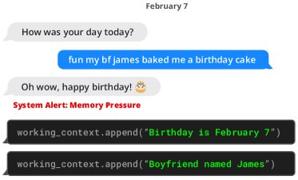

当前对话历史
Agent 记忆系统
没有记忆的 Agent 就像金鱼——每次对话都从零开始，上周帮你订的航班、昨天讨论的方案、上一步犯的错，全部不记得。记忆系统让 Agent 能跨会话积累经验、保持用户偏好、避免重复犯错。但记忆不是「存下来就行」——写什么、怎么检索、何时遗忘，每一步都是设计决策。
一图看懂
Agent 记忆系统仿照人类认知的三层结构：短期记忆是当前对话的工作区（就是上下文窗口），长期记忆是跨会话的事实和偏好库（向量数据库），情景记忆是过去经历的时间线（「上周二你让我订了机票」）。每次对话时，Agent 从长期和情景记忆中检索相关内容注入短期记忆，对话结束后再把值得记住的写入长期和情景记忆。
- 从长期/情景记忆检索注入的相关内容用户偏好事实知识技能与经验过去会话摘要带时间戳的事件长期记忆 Long-term / = 向量数据库
- 短期记忆 Short-term / = 上下文窗口写入值得记住的
短期记忆 Short-term / = 上下文窗口- 长期记忆 Long-term / = 向量数据库检索注入
- 情景记忆 Episodic / = 时间线日志检索注入
情景记忆 Episodic / = 时间线日志- 短期记忆 Short-term / = 上下文窗口写入事件摘要
三层记忆的分工
理解 Agent 记忆，关键是分清三层各自管什么、存在哪里、怎么用。它们不是三个独立系统，而是一个流动的整体。
| 维度 | 短期记忆 Short-term | 长期记忆 Long-term | 情景记忆 Episodic |
|---|---|---|---|
| 类比 | 工作台（正在处理的文件） | 文件柜（事实和偏好） | 日记本（什么时候发生了什么） |
| 存储位置 | 上下文窗口（KV Cache） | 向量数据库 | 带时间戳的日志/向量库 |
| 容量 | 有限（几K-几十K token） | 大（受存储限制） | 大（随时间增长） |
| 持久性 | 会话结束即消失 | 跨会话持久 | 跨会话持久 |
| 检索方式 | 直接在上下文中 | 语义相似度检索 | 时间 + 语义检索 |
| 典型内容 | 当前对话历史、系统提示 | 「用户偏好 Python」「API key 存在 env」 | 「上周二帮用户重构了 auth 模块」 |
边界声明
RAG 管「外面有什么」——从外部知识库检索文档；Memory 管「我记得什么」——从 Agent 自身经历中检索记忆；Context Engineering 管「这一轮带什么进去」——在有限上下文预算内组织好所有信息。三者互补，不互相替代。详见 上下文工程 和 RAG 检索增强生成。
论文原图：MemGPT 为什么把记忆比作操作系统
「短期记忆在上下文窗口、长期记忆在外部存储」这套分层思想，最清晰的表述来自 MemGPT（2023）——它干脆把 LLM 比作一台操作系统：上下文窗口是「内存（RAM）」，外部存储是「磁盘」，而 Agent 自己是「操作系统的调度器」，负责在两者之间搬移数据。看这张论文原图，理解这个类比就成功了一半。

手把手读这张图。图的左侧是传统操作系统：最上层是 CPU（计算单元），下面是内存（内存层 RAM）和磁盘（存储层 Storage）。操作系统的核心职责是「内存管理」——把正在用的数据放进内存，不常用的换到磁盘，需要时再调回来，这就是分页（paging）和虚拟内存。右侧是 MemGPT 的类比：LLM 是「计算单元」，它的上下文窗口对应内存——模型只能「看见」上下文里的内容，就像 CPU 只能访问内存里的数据；外部存储（向量库/文件）对应磁盘——数据容量无限但模型看不见。中间那根箭头就是关键创新：让 LLM 自己通过「函数调用」来管理分页——需要时读入（换入），不需要时写回（换出），就像操作系统调度内存，只是「调度员」变成了模型本身。
为什么这个类比重要？因为它把「上下文窗口有限」从一个坏消息变成了一个可解的问题。传统做法是「窗口多大就放多少」，满了就截断——相当于电脑一开太多程序就死机。MemGPT 的做法是「窗口是缓存不是仓库」——上下文里只放当前任务需要的内容，其余全部在磁盘（外部存储）上按需取用。这套思想后来演化成了 Letta（原 MemGPT） 框架，也就是本页后面「三大记忆框架对比」里的 Letta 行。所以看到那行「操作系统隐喻：分层记忆 + 自主分页」时，你现在知道它的源头就是这张图。
写入：什么值得记住
不是对话中的每一句话都值得写入记忆。把所有对话历史塞进向量库，不仅浪费存储，还会稀释检索质量——大量无关记忆让检索结果噪声变大。写入策略的核心是选择性。
事实提取
从对话中提取持久性事实：「用户是 Python 开发者」「项目用 React 18」。过滤掉闲聊和一次性信息。
偏好记录
记录用户的选择偏好：「喜欢简洁代码」「不要用 var 声明」。下次直接遵守，不用再问。
经验教训
记录失败和修正：「上次用 v1 API 报错了，应该用 v2」。避免重复踩坑。
写入时机也是一个设计选择。实时写入在每轮对话后立即提取并存储，延迟低但 LLM 调用频繁；批量写入在会话结束时统一提取摘要，调用少但可能遗漏中间细节。实践中常用混合策略：关键事实实时写，一般信息会话末批量写。
两个策略的成本差别值得算一笔账。假设每轮对话后实时提取一次，提取一次约消耗 500-1000 token 的输入加上约 200 token 的输出；一个 10 轮的会话就是 10 次提取，约 7000-12000 token 的额外开销。批量写入只在会话结束时提取一次，成本固定在一次，但代价是把整段对话历史一次性送进去——如果会话很长，单次输入反而可能超过单轮提取。更关键的是准确率差异：实时提取时模型只看到一小段上下文，提取出的「事实」可能断章取义；批量提取时模型能看到全貌，但离事件太远，细节容易在摘要里丢失。这就是为什么混合策略最稳妥：把「用户明确表态」这类高价值信号实时写，其余会话末统一处理。
一句话直觉
写入记忆就像做读书笔记——不是把整本书抄下来，而是提炼「这段讲了什么、对我有什么用」。写得太多反而找不到重点。
检索：怎么找到该用的记忆
记忆检索的挑战和 RAG 类似——从大量历史记忆中找到与当前对话相关的那些。但 Agent 记忆检索比 RAG 多一个维度：时间衰减。最近发生的记忆通常比三个月前的更相关，但也有例外（用户偏好是长期稳定的）。
- 当前对话上下文
- 向量化 query
- 向量相似度检索Top-K 候选
- 时间衰减加权最近记忆得分更高
- 重排LLM 判断相关性
- 注入短期记忆= 上下文窗口
检索策略的关键参数：
- Top-K：检索多少条候选记忆。K 太少漏掉相关记忆，K 太多注入噪声。通常 K=5-20。
- 时间衰减因子：$\\text{score} = \\text{similarity} \\times e^{-\\lambda \\Delta t}$，其中 $\\Delta t$ 是距今时间，$\\lambda$ 控制衰减速度。偏好类记忆 $\\lambda$ 设小（长期有效），事件类记忆 $\\lambda$ 设大（近期更重要）。
- 记忆类型过滤：不同场景检索不同类型的记忆——技术讨论时优先检索事实和经验，日常对话时优先检索偏好和情景。
检索还有一个常被忽略的细节：注入顺序影响模型的注意力。检索到的记忆如果堆在上下文的末尾，模型对它们的利用效率通常低于放在开头（靠近系统提示）的位置。生产实践中，把高价值的记忆放在 prompt 前部、与系统提示并列，能明显提升记忆的实际利用率。
把「写入」和「检索」放在一起看，完整的记忆生命周期其实是一个闭环：对话 → 提取 → 写入 →（下一次对话）→ 检索 → 注入 → 再提取。用时序图走一遍这个循环，比分别看两个环节更清楚，尤其是「写入发生在检索之后」这个顺序——它保证新提取的记忆要等下次对话才可能被用到，避免了「刚记住就检索到自己」的自我引用问题。
sequenceDiagram
participant U as 用户
participant A as Agent 会话
participant LLM as LLM
participant VS as 向量库
participant LOG as 事件日志
U->>A: 对话内容
A->>LLM: 处理请求
Note over A: 检索阶段:从向量库取相关记忆
A->>VS: 相似度检索 + 时间衰减
VS-->>A: Top-K 候选记忆
A->>LLM: 注入候选记忆再回答
LLM-->>U: 完成回复
Note over A: 写入阶段:提取值得记住的内容
A->>LLM: 提取事实/偏好/经验
LLM-->>A: 结构化记忆项
A->>VS: 冲突检测后写入
A->>LOG: 追加带时间戳的事件
这个时序里藏着两个生产级实现的关键决策。第一，检索和回答是两次独立的 LLM 调用还是一次？简单实现是先把检索到的记忆拼进系统提示再问一次模型，两段逻辑合在一次调用里；但检索需要先理解用户意图，很多团队会用一次轻量调用生成检索 query，拿到结果后再用主模型回答。前者省一次调用但检索质量差，后者多花一次调用但检索更准。对记忆丰富的用户，后者的收益通常远超那一次调用的成本。
第二，写入要不要在用户可见路径上？如果把「提取记忆」放在每次回复之后同步执行，整个回复的端到端延迟会增加一次 LLM 调用（约 1-3 秒）。生产上更常见的做法是把写入移出关键路径——回复先返回给用户，写入放进后台任务异步执行。代价是记忆有一定的「最终一致性」：用户刚说完的话，可能要一两秒后才能被后续对话检索到。对绝大多数场景这完全可接受，但对「用户刚纠正了一个偏好，紧接着又问一个相关问题」这种场景，就要求系统至少在写入完成前把这次对话的新信息临时挂在会话上下文里，而不是依赖异步写入结果。
遗忘：不遗忘的记忆系统会瘫痪
遗忘不是 bug，是 feature。一个运行半年的 Agent，如果每条记忆都保留，向量库可能积累数十万条记录——检索速度下降、噪声上升、过时信息干扰决策。人类大脑也会遗忘，这是保持认知效率的必要机制。工程上可以给每条记忆记录「最后访问时间」，定期把长期未命中的条目降级，让记忆库始终围绕当前活跃的话题运转。
主动遗忘
定期清理过时和低价值记忆：已被纠正的错误事实、一次性的临时信息、长期未被检索的边缘记忆。需要设 TTL（存活时间）或定期 GC（垃圾回收）。
记忆合并
把多条细粒度记忆合并为更精炼的摘要：「用户周一说了偏好 A，周三又说了偏好 B，周五确认用 B」→ 合并为「用户偏好 B」。类似人类把碎片记忆整合为长期知识。
遗忘策略的权衡在于保留率 vs 检索质量：遗忘太激进可能丢掉有用的记忆，遗忘太保守则检索噪声增大。一个实用策略是按记忆类型设不同保留策略：事实和偏好长期保留（除非被显式更新），情景记忆按时间衰减定期归档，临时信息会话结束即删。
如果把记忆条目看作有生命周期的对象，它们的状态流转可以用状态图刻画。理解这张状态图，你就理解了遗忘机制要处理的全部状态转移：
stateDiagram-v2
[*] --> 活跃
活跃 --> 候选归档 : 超过 TTL / 长期未检索
候选归档 --> 归档 : 定时 GC 确认无引用
候选归档 --> 活跃 : 再次被检索命中(忆起)
活跃 --> 已合并 : 与同类记忆合并为摘要
已合并 --> 归档 : 原始碎片淘汰
活跃 --> 已更新 : 新事实覆盖旧事实
已更新 --> 活跃
归档 --> [*] : 永久删除(隐私/过期)
活跃 --> [*] : 会话结束删除(临时信息)
这张状态机把「遗忘」从一件含糊的事拆成了四个明确的机制：TTL 过期（设置存活时间，到期进入候选归档）、LRU 淘汰（长期未被检索的记忆优先级降低）、合并压缩（多条碎片合成一条摘要，原碎片淘汰）、覆盖更新（新事实替换旧事实，而非叠加）。对应到工程实现，前两个可以由定时任务批量处理，后两个通常需要 LLM 参与判断。值得注意「候选归档 → 活跃」这条复活边——它说明归档不应该是物理删除。把记忆标记为「已归档」而不是「已删除」，能让用户在几个月后重新提起旧事时，记忆还能被检索出来。只有涉及隐私或合规要求时，才做真正的物理删除。
三大记忆框架对比
2025-2026 年涌现了多个 Agent 记忆框架，它们的设计哲学和适用场景各有不同：
| 维度 | Mem0 | Letta（原 MemGPT） | Graphiti |
|---|---|---|---|
| 核心思路 | LLM 驱动的记忆提取与管理 | 操作系统隐喻：分层记忆 + 自主分页 | 时序知识图谱 |
| 记忆结构 | 向量化事实 + 用户画像 | 核心记忆（上下文）+ 归档记忆（外部存储） | 实体-关系-时间的图结构 |
| 检索方式 | 向量相似度 + 语义过滤 | LLM 自主决定何时检索、检索什么 | 图遍历 + 时间查询 + 向量检索 |
| 遗忘机制 | 定期清理 + 冲突更新 | LLM 自主管理归档和唤回 | 时序衰减 + 图剪枝 |
| 时间感知 | 弱（有时间戳但不主动利用） | 弱 | 强（原生时序图谱） |
| 适用场景 | 个人助手、偏好记忆 | 长对话、需要自主管理的 Agent | 需要时间推理和关系追踪的场景 |
选型注意
记忆框架仍在快速演进，API 和设计可能随时变化。选择时关注三点：一是你的场景是否需要时间感知（需要则 Graphiti 有优势），二是记忆管理的自主性程度（高自主性选 Letta，可控性选 Mem0），三是与现有 Agent 框架的集成难度。不要追求「最先进」，要追求「最适合你的记忆模式」。
记忆的存储选型：向量库不是唯一答案
很多人一听到「Agent 记忆」就默认用向量数据库，但向量检索不是万能的。真实系统里，不同性质的记忆适合不同的存储介质，选错了会在检索精度或工程复杂度上吃大亏。下面把短期和长期记忆的存储选项摆在一起对比，注意这不是「谁更好」的问题，而是「哪种记忆用哪种」的搭配问题。
| 存储方案 | 适合的记忆类型 | 优势 | 劣势 |
|---|---|---|---|
| 上下文窗口 / KV Cache | 短期记忆、当前会话 | 零额外延迟、模型天然可见 | 容量小、会话结束即失 |
| 向量数据库 | 事实、偏好、经验 | 语义检索、规模大 | 检索有延迟、需要向量化管线 |
| 关系型数据库 | 结构化偏好、配置、计数字段 | 精确查询、事务与一致性 | 语义检索弱、需要 schema |
| 时序日志 / 键值存储 | 情景记忆、事件流 | 追加写快、天然带时间 | 语义检索需要额外索引 |
| 知识图谱 | 实体关系、多跳推理 | 关系查询强、可解释 | 建图与维护成本高 |
选型的第一原则是别让所有记忆都走向量检索。一个反例很常见：把「用户所在时区」「语言偏好」这类键值型信息也塞进向量库，每次检索都要做向量相似度计算，返回的结果还未必精确。这类确定性记忆用关系库存一个 user_id → preference 映射，一次精确查询毫秒级返回，准确率 100%。正确的分层思路是：确定性强的走精确存储，语义性强需要「模糊找」的才走向量检索，时间线性质的走时序日志。
第二个原则是把「长期库」和「当前会话上下文」之间做一层缓冲。很多团队直接在每次对话时全量检索长期记忆注入上下文，结果发现 token 消耗巨大、检索结果互相冲突。更稳的做法是引入一个「会话记忆缓存」：会话开始时检索一次，把结果缓存起来；会话过程中对缓存的记忆做增量修正；会话结束时把修正结果写回长期库。这既降低了反复检索的延迟和成本，也给了系统一个天然的「短期记忆」容器——和本页开头讲的三层结构一一对应。
新手最容易搞错
新手最容易把「记忆」和「长上下文」当成一回事——「把上下文窗口调大一点不就有记忆了吗？」这个想法只对了一半。长上下文（比如 128K token）确实让单次会话里能放更多内容，但它有两个根本限制：一是成本——上下文每轮重发，128K 的输入让每次调用都贵得吓人；二是它记不住「上次会话」的事——会话一结束，窗口里的东西就全部清空，下周用户再来，它还是白板。记忆系统的价值恰恰在跨会话：把值得记住的提炼出来存到外部，下次会话检索回来。所以正确的心智模型是：长上下文解决「一次任务装得多」，记忆系统解决「多次任务记得住」，两者互补，谁也不能替代谁。
记忆系统的工程挑战
从 demo 到生产，Agent 记忆系统面临几个实际的工程问题：
- 一致性：用户在会话 A 中说「我换用 TypeScript 了」，会话 B 中的记忆应该是 TypeScript 而非原来的 Python。记忆更新需要处理冲突——新事实覆盖旧事实，而不是追加。
- 多用户隔离：不同用户的记忆必须严格隔离。用户 A 的偏好不能泄露到用户 B 的记忆检索中。这不仅是工程问题，更是隐私合规的硬约束。
- 检索延迟：记忆检索增加了一轮额外调用（向量检索 + 可能的重排），可能增加 100-500ms 延迟。对延迟敏感的场景需要缓存热点记忆或异步预检索。
- 记忆质量评估：怎么衡量记忆系统好不好？没有标准 benchmark。实践中看间接指标——任务完成率是否因记忆提升、用户是否减少了重复说明偏好。
展开：Mem0 风格的记忆写入与检索伪代码
# 写入记忆：从对话中提取值得记住的内容
def add_memory(messages, user_id):
# LLM 提取事实、偏好、事件
extracted = llm.extract(
prompt=f"从以下对话中提取持久性事实和用户偏好:\n{messages}",
)
for item in extracted:
# 检查是否与已有记忆冲突
existing = vector_db.search(
query=item.content, user_id=user_id, top_k=3
)
if existing and is_conflict(item, existing[0]):
# 冲突则更新而非追加
vector_db.update(existing[0].id, item)
else:
vector_db.add(item, user_id=user_id)
# 检索记忆：注入当前对话上下文
def search_memory(query, user_id, top_k=5):
candidates = vector_db.search(
query=query, user_id=user_id, top_k=top_k * 2
)
# 时间衰减加权
for mem in candidates:
mem.score *= time_decay(mem.timestamp, mem.type)
# 重排并取 Top-K
return rerank(candidates, query)[:top_k]这是简化伪代码，真实实现还需处理并发写入、记忆合并、分级存储等问题。Mem0、Letta、Graphiti 各有不同的实现策略，但核心循环都是「提取 → 写入 → 检索 → 注入」。
记忆回放与反思：从记忆到更高层认知
检索只是把「相关的记忆」搬到眼前，而人类记忆的价值远不止于此——我们会在独处时「回放」经历，提炼出比单个事件更高层的结论。Agent 记忆系统如果只做检索注入，就错过了这层能力。经典实验来自斯坦福小镇（Generative Agents）：25 个 Agent 在小镇里生活，每个 Agent 都会定期把最近一天的经历回放给模型，让它反思出几条高层的自我认知，比如「我昨天和谁起过冲突」「我正在准备一个聚会」。这些反思被当作新的记忆存回记忆库，并在后续行为中影响决策。实验结果里，Agent 能说出「那个朋友最近疏远了我」——这种单靠原始事件检索很难产生的推理。
从工程角度看，回放反思的机制并不神秘，它是一个离线批处理：定时（比如每 N 条事件或每隔一段时间）取最近 M 条情景记忆，丢给 LLM 做一次归纳，产出若干条「反思记忆」，与原始事件分开存储。反思记忆的特点是抽象层级更高、数量更少、价值密度更大。之所以说它「从记忆到更高层认知」，是因为它在原始记忆之上叠加了一层信息处理——这正是人脑从情景记忆（发生了什么）向语义记忆（我该怎么看这些事）演化的模拟。
但回放反思有三个工程成本要想清楚。第一是token 消耗：每次反思要把 M 条事件全部送进模型，M 越大成本越高，通常取 20-50 条、每天跑一次即可。第二是反思质量的评估难：一条反思是「有价值」还是「废话」，没有客观标准，只能靠下游行为间接验证——反思记忆被检索命中的频率是否足够高，是不是最终帮助了回答。第三是过度反思的风险：如果反思模型的归纳能力不足，可能把一次偶发事件总结成「用户不喜欢 X」的过强结论，之后反复被检索出来误导行为。缓解办法是给反思记忆标注置信度或来源事件列表，让检索阶段可以按置信度加权，而不是把一切反思都当成既定事实。
最后把回放反思放进本页的框架里定位：它不属于三层记忆的任何一层，而是层与层之间的加工管道——输入是情景记忆（时间线），输出是更接近长期记忆的语义化条目。理解了这层管道，你对「Agent 记忆」的认识就从一个「存储组件」升级为一个「有生命周期的认知系统」：写入、检索、遗忘、回放反思，四个环节互相配合，才构成一个完整的记忆系统。
展开：冲突检测的算例——为什么「覆盖」比「追加」更重要
假设用户的记忆库里已经有两条记忆：
M1: 用户是 Python 开发者，偏好 FastAPI
M2: 用户的项目使用 React 18 前端今天用户说「我最近切到 Go 了，主要是公司新项目要用」。一次合格的记忆提取应该识别出：这条信息与 M1 冲突（Python → Go）。如果不做冲突检测直接追加，库里会同时存在「偏好 Python」和「偏好 Go」两条互相矛盾的事实，检索时两者都可能被命中，模型就会在回答里「左右横跳」。
正确的流程是：写入前先检索「语义相近的已有记忆」→ 判定是否冲突 → 冲突则覆盖旧条目（保留更新时间戳），不冲突才追加。伪代码：
new_item = {"content": "用户是 Go 开发者", "type": "preference"}
hits = vector_db.search(new_item["content"], top_k=3)
for h in hits:
if is_conflicting(h, new_item): # 语义冲突判定（可由 LLM 做）
vector_db.update(h.id, new_item) # 覆盖而非追加
break
else:
vector_db.add(new_item) # 无冲突才新增这个「冲突先检、覆盖优先」的规则，是记忆系统里最容易做错但也最值钱的一环——很多「记忆怎么越用越糊涂」的问题，根因都是冲突记忆只增不覆盖。
要点速查
- 本质：Agent 记忆让 Agent 跨会话积累经验、保持偏好、避免重复犯错。三层结构——短期（上下文窗口）、长期（向量库）、情景（时间线日志）。
- 边界：RAG 管「外面有什么」，Memory 管「我记得什么」，Context Engineering 管「这一轮带什么进去」。三者互补不替代。
- 写入：选择性提取事实、偏好和经验，不是全部对话都存。关键是冲突检测——新记忆覆盖旧记忆而非追加。
- 检索：向量相似度 + 时间衰减 + 重排。不同记忆类型用不同衰减因子——偏好长期有效，事件近期更重要。
- 遗忘：不遗忘的记忆系统会瘫痪。主动清理过时信息 + 合并碎片记忆，按类型设不同保留策略。
- 三大框架：Mem0（LLM 驱动提取管理）、Letta（操作系统隐喻的自主分页）、Graphiti（时序知识图谱）。选型看时间感知需求、自主性程度和集成难度。
- 常见坑：多用户记忆隔离是隐私硬约束；记忆检索增加延迟需缓存；记忆质量没有标准 benchmark，看间接指标。
参考文献与延伸阅读
- Mem0: Building Production-Ready AI Agents with Scalable Long-Term Memory — LLM 驱动的记忆管理 · arXiv:2504.19413
- MemGPT: Towards LLMs as Operating Systems — Letta 的前身，操作系统隐喻的记忆分层 · arXiv:2310.08560
- Graphiti: Temporal Knowledge Graph for Agent Memory — 时序知识图谱记忆 · GitHub: getzep/graphiti
- A Survey on the Memory Mechanism of Large Language Model based Agents — Agent 记忆机制综述 · arXiv:2404.13501
- Generative Agents: Interactive Simulacra of Human Behavior — 斯坦福小镇，Agent 记忆与反思的经典实验 · arXiv:2304.03442
接下来
有限上下文预算的分配与压缩策略见 上下文工程。RAG 从外部知识库检索文档见 RAG 检索增强生成。Agent 的基础范式（ReAct、Plan-and-Execute）见 Agent 基础范式。Agent 执行侧的安全隔离见 Agent 安全与沙箱隔离。
权威延伸资料
围绕“Agent 记忆系统”继续深入
本章把 Agent 看成一个带工具的闭环系统：模型负责决策，工具改变环境，反馈驱动下一步；记忆、规划、协作和安全共同决定可靠性。
阅读提示：Agent 的核心不是“让模型多想几步”，而是设计可观察、可中止、可验证的行动循环。
- ReAct: Synergizing Reasoning and Acting ↗
最常用的思考–行动–观察循环之一，适合作为工具型 Agent 的最小抽象。
- Toolformer: Language Models Can Teach Themselves to Use Tools ↗
展示模型如何学习何时调用 API 以及如何把工具结果纳入上下文。
- Model Context Protocol Specification ↗
工具、资源和提示的开放协议规范，适合核对 MCP 客户端/服务端边界和安全责任。
- SWE-agent: Agent-Computer Interfaces Enable Automated Software Engineering ↗
以代码仓库任务说明工具接口、上下文组织和执行反馈如何影响 Agent 成功率。
- OSWorld: Benchmarking Multimodal Agents for Open-Ended Tasks ↗
桌面环境中的长链任务评测，帮助理解 Computer Use 的状态、动作和可复现性问题。
资料优先选用原始论文、官方文档、大学课程和公共机构材料；链接按 2026-08-10 检索，具体版本以来源页面为准。
主题级技术深化
围绕“Agent 记忆系统”继续深入
发展脉络
Agent 记忆从简单对话历史发展到摘要、向量检索、事件记忆和可写长期状态；核心问题是何时写、何时读、何时遗忘。
机制抓手
把记忆分为 working/context、episodic、semantic 和 procedural，写入前做去重与权限过滤，读取后记录来源和新鲜度。
工程权衡
记忆越多越容易污染当前任务；摘要压缩会丢失条件，向量相似度也不能替代时间、权限和冲突判断。
前沿观察
记忆反思、用户模型和跨任务策略学习正在发展，长期一致性与可删除性仍缺少统一基准。
实践检查设计写入/读取/更新/删除协议，并构造过期事实、冲突事实和越权记忆的回归用例。